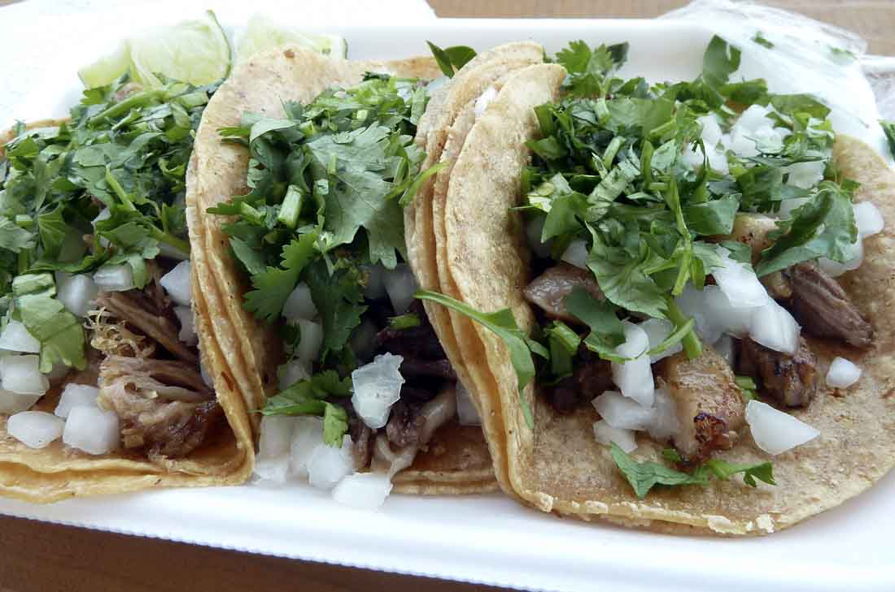
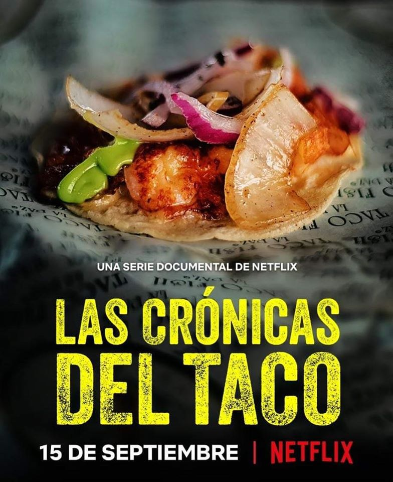

La verdad no se si ha quedado claro pero me gustan los tacos en especial los de suadero,siempre y cuando se haga de manera correcta, los tacos son muy buenos

Los tacos son tan importante que incluso le hicieron un gran documental en netflix llamado las cronicas del taco

Las cronicas del taco lo puedes ver aqui
son maravillosos son ricos pura proteina TMás información de tacos